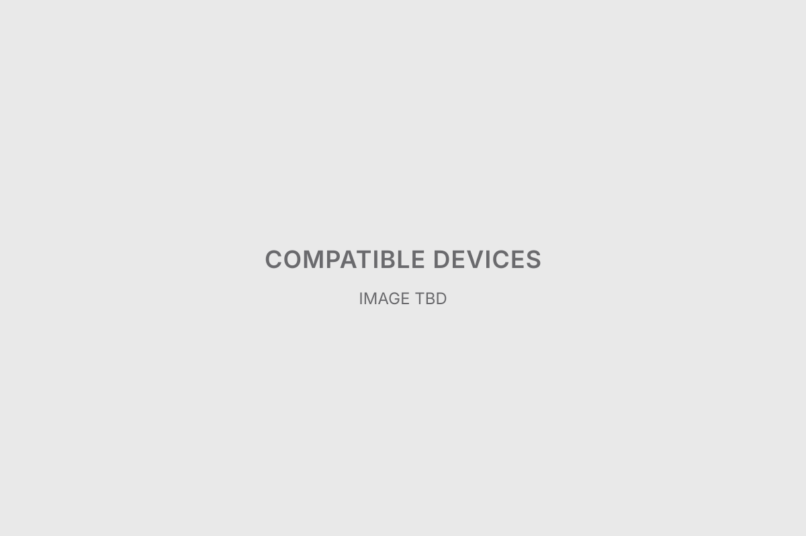
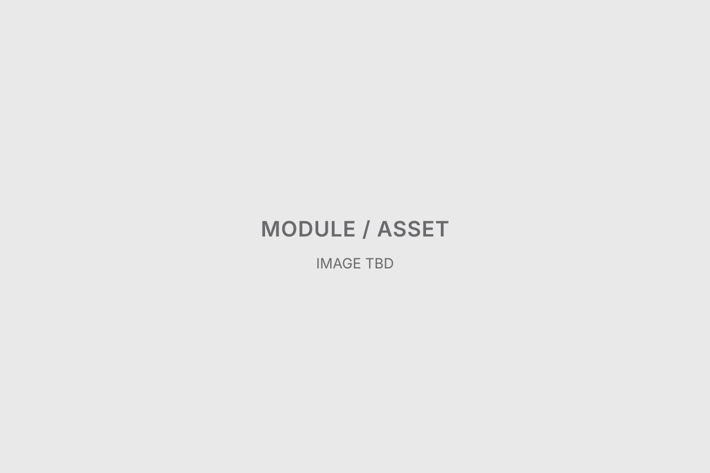
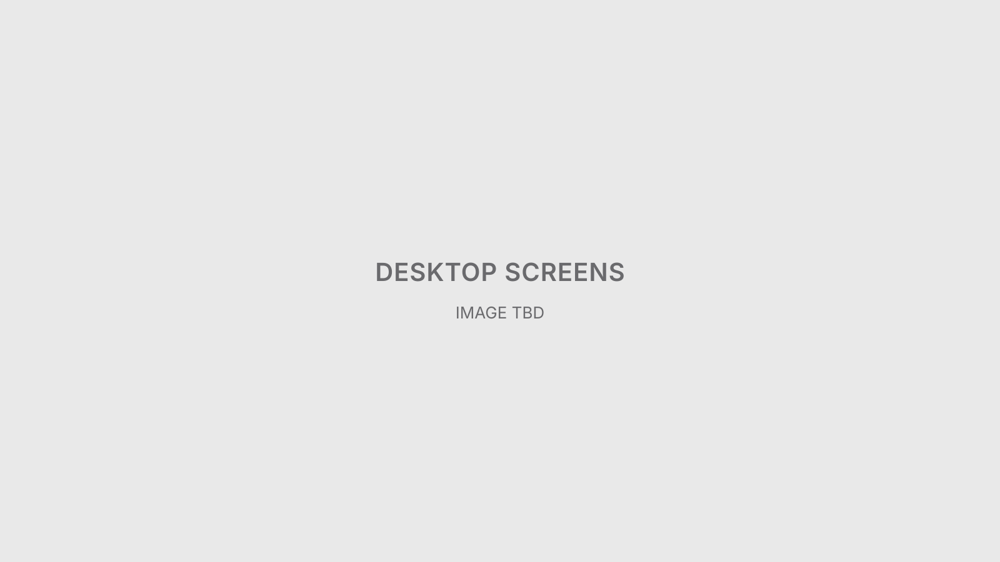
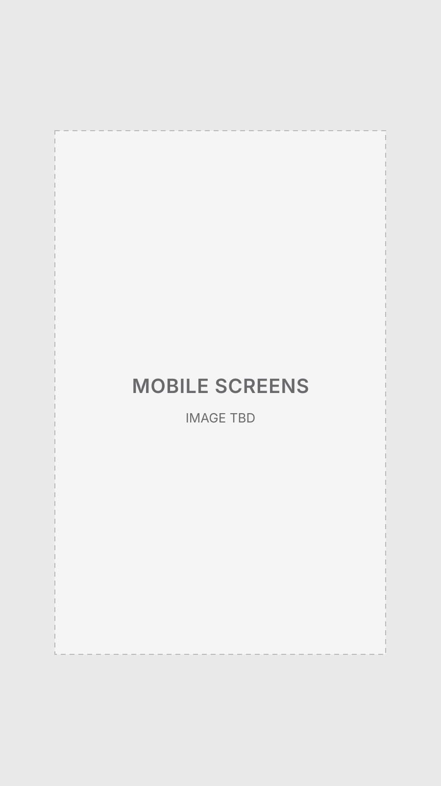

A UX/UI project that connects SmartThings compatible-device information, previously offered on a separate ST mall, to Samsung.com's design system, improving brand consistency and information discovery.

Client / Platform
Samsung Electronics / Samsung.com
Period
Aug – Sep 2024
Role
UX/UI Designer · UI structure & content design
Contribution
Within the constraint of keeping the existing ST mall development structure, applied the Samsung.com design system to organize the information hierarchy, filters, thumbnails, CTAs and other key UI elements.
Deliverables
New Compatible Devices page UI · Information discovery and filter UI · Brand, category and product list components · Key UI component designs · Desktop and mobile design outputs
Context
Project requirements
Global guidelines — the Samsung.com design system
Development and operating constraints — keeping the ST mall's existing development structure
Components — applying the existing design system standards
My Role
What I did
My contribution included:
Designing and refining the UI
Organizing the information structure and content hierarchy
Applying components and layouts
Applying the existing design system standards
Defining an improvement direction within the existing development structure
Judgment & proposals
I aligned the independent ST mall UI with Samsung.com design standards.
I realigned key UI elements such as thumbnail ratio, text hierarchy, filter composition and CTA style.
I defined an improvement scope that could actually be applied, given the need to keep the existing development structure.
Guidelines applied
Samsung.com global design system
UI components and design guidelines
The existing ST mall development structure
Design Approach
Reviewing the existing site and requirements
Setting the UI improvement direction
Organizing information hierarchy and layout
Applying design-system-based components
What I Designed

Refining filters, hierarchy, and reusable UI elements.Aligning SmartThings device discovery with Samsung.com's design language.
Final Deliverables
Outcome
New Compatible Devices UI designed
Improved information discovery and content structure
UI improvements applied with the existing development constraints in mind

Final desktop interface design.

Final mobile interface design.
Project Notes
The key task was connecting the independent ST mall UI and information structure to the Samsung.com design experience. Under the condition of keeping the existing development structure, I reorganized key UI elements such as thumbnails, text hierarchy, filters and CTAs.
Rather than building a new system, I used the existing design system to arrive at an improvement that could actually be implemented.